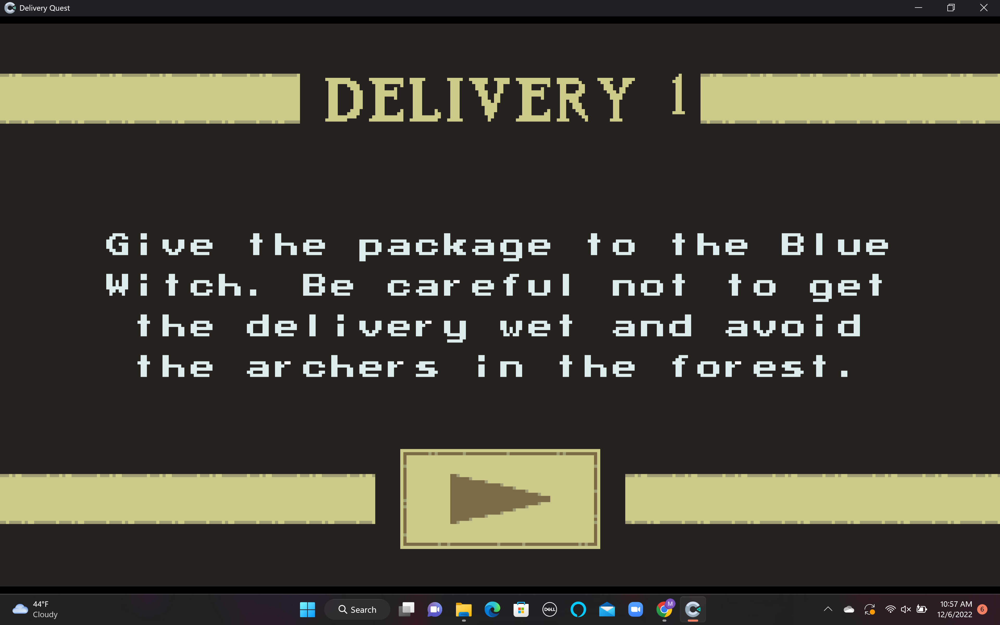
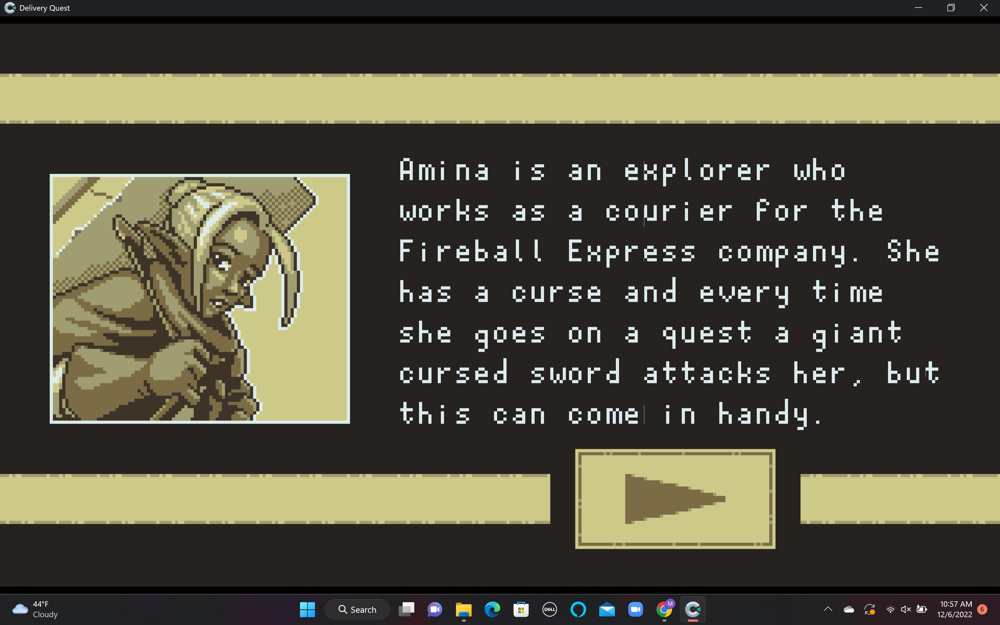
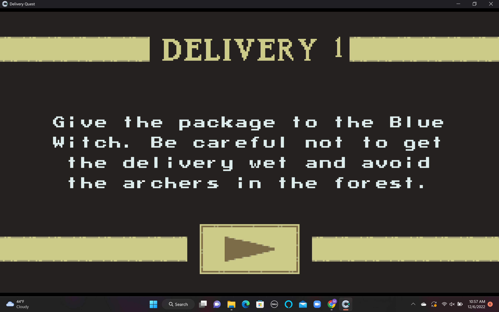
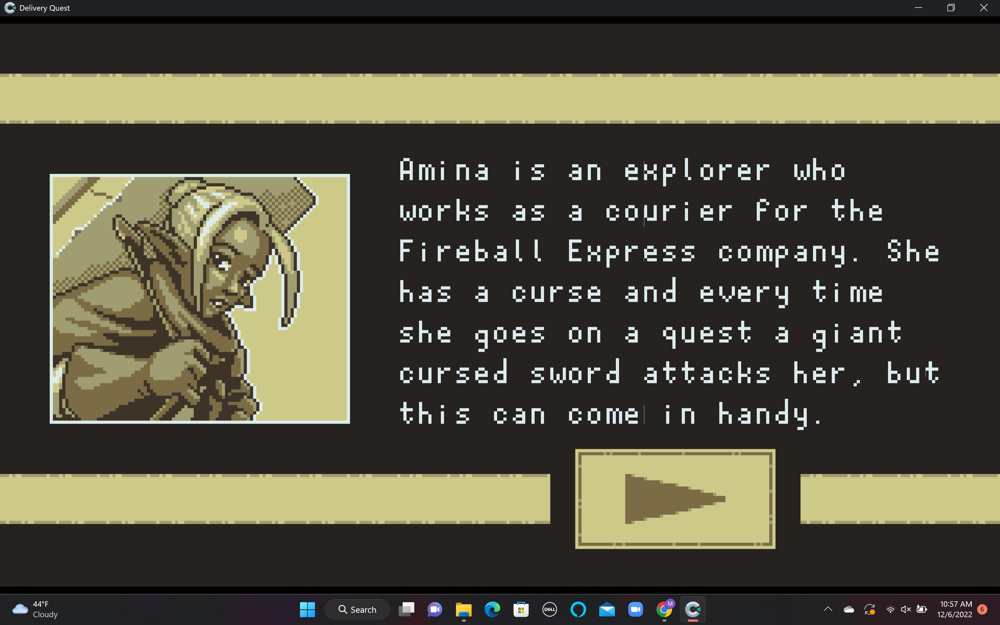

Game Review
For the Game Analysis Assignment, I played a game called Delivery Quest.
Delivery Quest is a game on itch.io that was created by Róger Goulart and
it was submitted to Mini Jame Gam #11. Delivery Quest is an action packed
and survival game that is very fun to play. The objective of the game is to
deliver the package to the end of the level. Amina, the main character and
the only character you can play and interact with, faces many challenges and
obstacles throughout the delivery. For starters, there is a cursed sword
that follows Amina around the whole level, trying to stab her. If the sword
successfully stabs Amina, then she loses a life. She only starts with a total
of five lives and if all five lives are lost, then the game is over. Amina can
also lose lives by being shot by archers or being attacked by the magical bear.
The archers peek through the woods and shoot their arrows across the terrain.
The magical bear comes out at the end of the level. In order to defeat the bear,
Amina must navigate around the bear so that the sword stabs the bear. Amina
needs to avoid the sword, arrows, and the bear at all costs. In addition, there
are obstacles such as water, stone, and bridges that Amina must navigate through correctly.
Personally, I had a great experience playing Delivery Quest and would recommend playing it.
Although there is only one level, Delivery Quest was a fun and easy game to catch on quickly
. I wish there were more levels to play because it reminds me of a Super Mario Bros kind of game.
It blows my mind that this game was made within 48 hours. Delivery Quest gives off old retro
vibes and has a nice pixelated art design that I liked a lot. It would be cool if there were
more characters to play as. I’m hoping that in the future Róger Goulart adds to this magnificent game.
 


